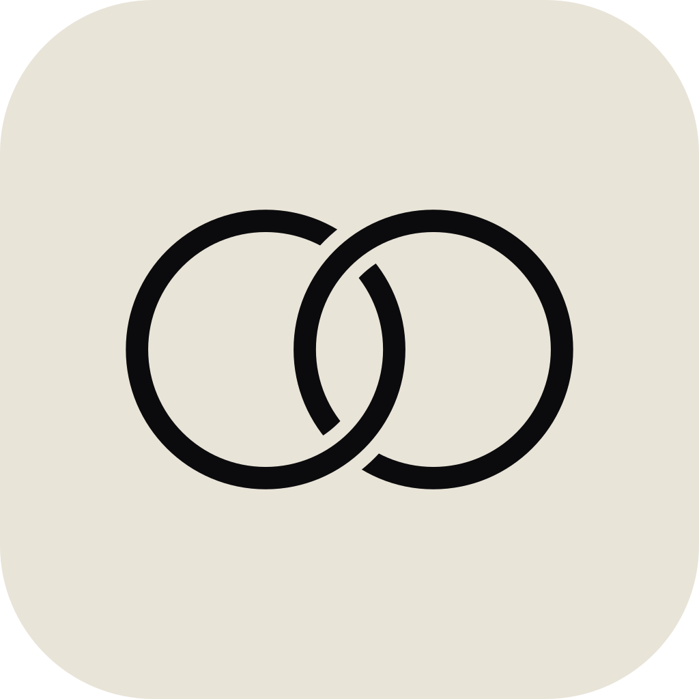
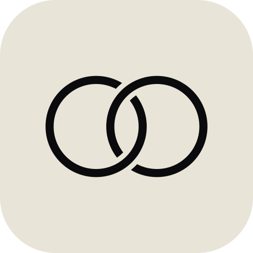
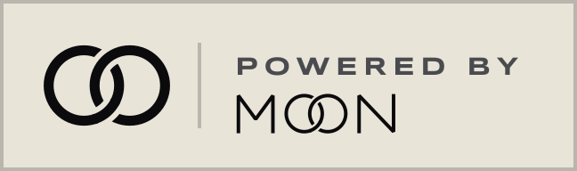
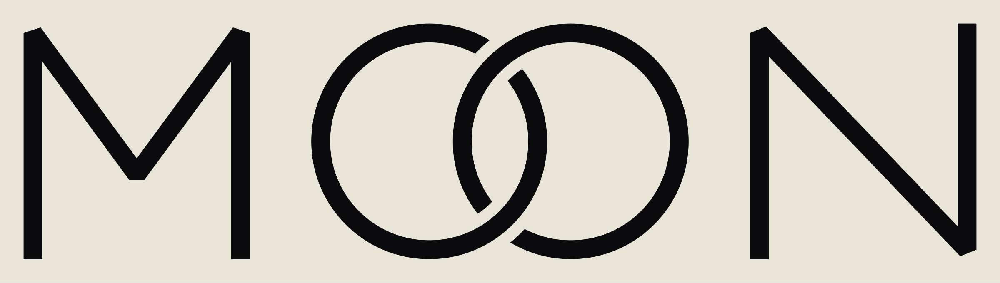
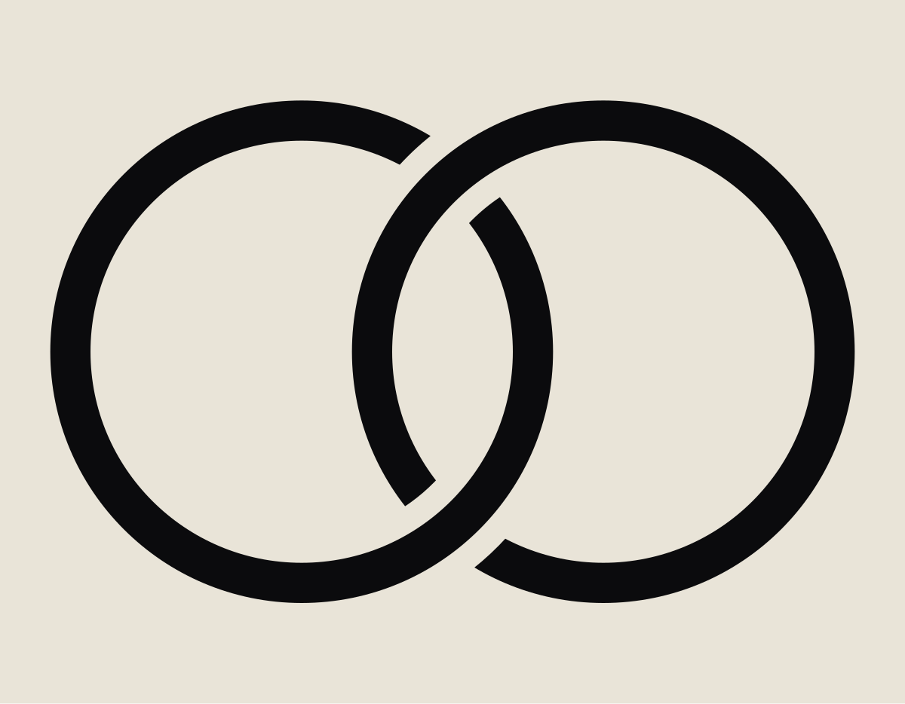
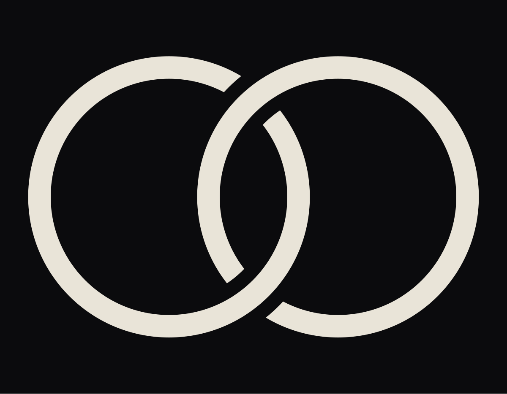
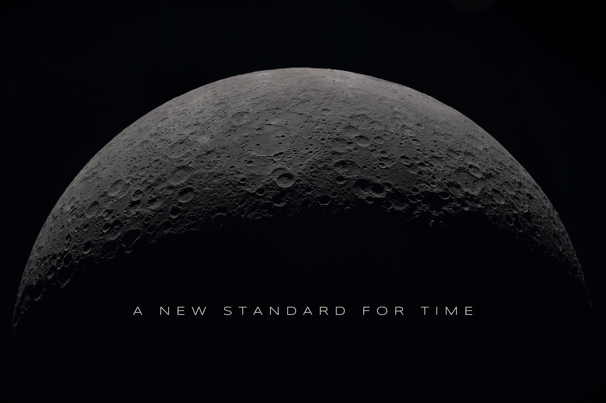
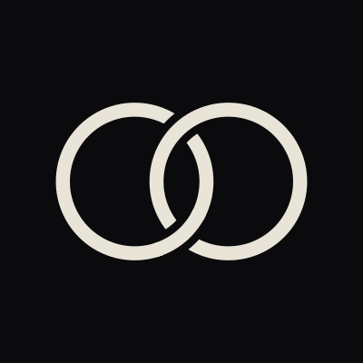

PRESS KIT
Logos, badges, colors, type and the facts about Moon. Every file here is signed with a Moonmark and registered to Moon, so anyone can check that a copy is genuine and when it was published.
SIGNED ON MOON
We put our own brand on Moon. Before publishing, every logo, icon, badge and color file in this kit, plus a written brand statement, was fingerprinted and signed with a Moonmark by Moon's verified key. Each signature carries Moon's two signatures and a public drand randomness beacon, which proves it couldn't have been made any earlier, and Moon's registry records it under Moon's verified name. Nobody can backdate it or claim these files first.
Found a Moon logo somewhere? Drop it here. A genuine file shows as registered by Moon, verified. Cropped, resized or recolored copies of our images are found too. The file never leaves your device.
ABOUT MOON
Use this description in articles and listings.
Moon is a new, open standard for time. It counts each cycle, Moon's year, in 13 moons, each one lunar cycle long on average, for exactly 369 lunes, and gives every moment one Moonmark, the same everywhere, with no time zones or daylight saving. The standard, its reference code and its API are free for anyone to use.
WORDMARK
The primary logo. The two O's are linked: one passes over the other at the top and under it at the bottom. SVG and PNG versions are in the full kit.


MARK
The linked O's on their own, for avatars, favicons and tight spaces.

APP ICONS
1024 px masters. The kit also includes 512, 64 and 32 px versions; the small sizes use a heavier stroke so they stay legible.
POWERED BY MOON
For sites and apps that show Moon time from the API. Link the badge to the Moon homepage. Full rules are on the API page.
LOADER
Breathe: one solid circle opens into the two rings and closes again, 3.2 seconds, no pause. The animated SVG and a standalone HTML page are in the full kit.
COLORS
About 90 percent dark, 10 percent cream. Regolith is the only accent.
TYPOGRAPHY
Three free Google Fonts. Never substitute others in brand materials.
Headlines, labels and navigation. Uppercase only, wide tracking.
Body copy and reading. Sentence case, 400 and 500 weights.
Times, Moonmarks, code and numbers. Tabular figures.

USAGE
All rights reserved. The Moon name, wordmark, linked-O mark, app icons, loader and social images may not be used without written permission from Moon, with two exceptions.
Editors and writers may show the logo when reporting on Moon, using the files on this page.
Sites and apps that show Moon time from the Moon API may show the Powered by Moon badge, unaltered, linked to moon369.org.
Keep clear space around the logo equal to the height of one O.
Wordmark at least 80 px wide on screen; mark at least 24 px.
Cream on dark or black on cream. Nothing else.
No gradients, shadows, glows, outlines or new colors.
The linked O's are one shape. Never unlink, rotate or space them.
Always use the supplied files. Never retype MOON in a font.
The Moon name and marks are trademarks of Moon (™). The signed Moonmarks on this page prove what Moon published and when; they are not a trademark registration. Using the marks to imply partnership, certification or endorsement is never allowed without written approval.
THE REGISTRY
Every file in the kit with its SHA-256 fingerprint and its live status on Moon. The manifest lists them all and is signed too, so one signature vouches for the whole set.















DO THE SAME FOR YOUR BRAND
This is how we did it, and any company can do the same for its logos, product photos, designs or documents. It takes an API key and four steps.
- Fingerprint every file
A SHA-256 fingerprint identifies a file exactly; change one pixel and it changes completely. For images, also make the 64-bit look-alike hash so edited copies can be found. Our script does both and writes a manifest.
shasum -a 256 logo/*
- Write down what you claim
A short brand statement: the name, the marks, the colors and how others may use them. Sign the statement and the manifest along with the files.
- Sign them all at once
One call signs up to 100 fingerprints. Each gets a Moonmark, Moon's two signatures and a registration under your company name.
curl -X POST https://api.moon369.org/v1/sign/batch \ -H "Authorization: Bearer $MOON_KEY" \ -H "Content-Type: application/json" \ -d @sign-request.json
- Publish, and let anyone check
Post the files with their fingerprints. Anyone can drop a copy on moon369.org/verify or call the lookup API to see who registered it and when, and verify the signatures without trusting anyone.
curl https://api.moon369.org/v1/lookup/<sha256>
Start with a free API key. For a verified company name, email moon369org@proton.me. The script we used is open source, and so is the exact request we sent.
A Moonmark proves that a file existed at a moment and who registered it. It is strong evidence of authorship and priority, but it is not a trademark or copyright registration, and it is not legal advice.
SOCIAL
The X banner and avatar. The kit also includes the full-size "A new standard for time" image.